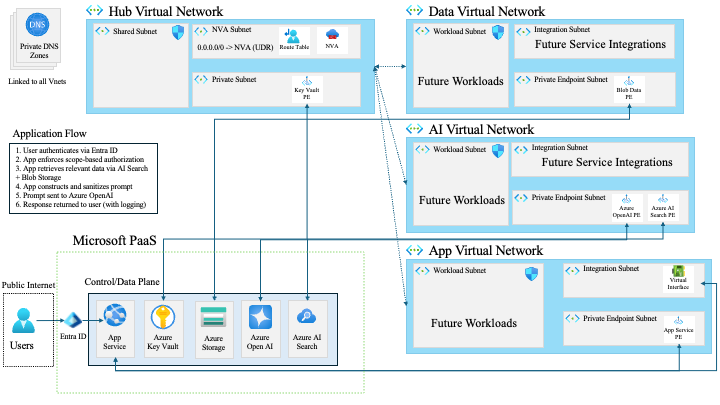

Reference architecture diagram
Open full diagram
Architecture
Project Aegis combines Microsoft cloud services, controlled networking, and a secure retrieval application into one design for private document access, hybrid search, and observable AI use.

Microsoft Entra ID, MFA, Conditional Access, Key Vault, managed identity, Log Analytics, and Sentinel provide the tenant, identity, secrets, and monitoring baseline.
A hub-and-spoke layout, private DNS, private endpoints, and a Linux NVA egress path keep services reachable through controlled internal routes.
A Flask application uploads documents, chunks content, indexes data for hybrid search, enforces access checks, calls Azure OpenAI with scoped context, and logs each stage.
Azure foundation
The environment is organized as a remote Microsoft cloud build with clear resource structure, role assignments, and service boundaries so operations stay understandable as the project grows.
Microsoft Entra ID, MFA, and Conditional Access establish authenticated user sessions before the app evaluates document scope or retrieval permissions.
Key Vault stores protected configuration, while managed identity reduces embedded credentials and lets the application authenticate to downstream Azure services more cleanly.
Diagnostics flow into Log Analytics, and Sentinel provides a security operations layer for analytics rules, alerting, and post-incident investigation.
Networking layer
The architecture separates shared coordination from application, AI, and data paths so each layer can be routed and reasoned about more deliberately.
Private endpoints and private DNS keep storage, search, and model services reachable through internal addressing rather than broad public exposure.
User-defined routes can steer outbound traffic through a Linux network virtual appliance so the environment has a centralized egress control point.
App Service uses integrated network paths to reach internal services while preserving separation between presentation, retrieval, and data service dependencies.
AI application architecture
Documents land in Blob Storage as durable source material for indexing and retrieval workflows.
Content is processed into chunks and indexed with metadata so hybrid search can combine keyword and vector retrieval.
The application evaluates the signed-in user context, retrieves only allowed content, and treats retrieved text as untrusted input.
Azure OpenAI receives scoped context, responses stay grounded in cited chunks, and activity is logged for testing and investigation.